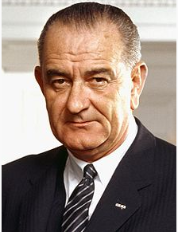

a
I can often be found reading a book and sometimes those books are history books. By far and away, the greatest biography I have run across is Robert Caro's multi-volume (and still ongoing) series on America's 36th President, Lyndon Johnson. Entitled "The Years of Lyndon Johnson", the series is currently four books long, with a fifth coming on Johnson's Presidency, and currently is over 3000 pages. If that sounds like a big time investment, realize the author published his first book in the series in 1982. He has been writing the series longer than some of our Skyline associates have been alive! It is a truly impressive piece of work, winning numerous awards including Pulitzers, National Book awards, etc.
So, what does a man who left the office of Presidency at the end of the 60s have to teach us about being programmers when we are all running around with mobile devices in our pockets that have more power than the U.S. Navy had when he retired? Obviously it is a bit of a stretch to say LBJ was teaching lessons to coders in 2013, but we can all learn from people who were the top of their field. And while you can make a case that LBJ was not a great President or Senator, he WAS one of the great politicians of the 20th century. Taking lessons from greatness in any field and applying them to your own field can be interesting, so let's learn what LBJ has to teach coders.
Have a Mentor - LBJ owes much of his political career to two men whom he adopted as mentors; Sam Rayburn and Richard Russell. Sam Rayburn, like LBJ, was from Texas and served with LBJ's father in the Texas House. Upon winning election to the U.S. House, LBJ developed a close relationship with Rayburn, who was in the U.S. House for almost 49 years. By the time LBJ arrived, Rayburn was one of the House leaders and would become the Speaker several years after his arrival. Rayburn provided not only advice to LBJ, but also assistance. He helped him get committee assignment he would not have been able to get otherwise.
After his election to the U.S. Senate, which people are appointed to based on time in office, Johnson quickly became the Senate Whip and then the Minority leader after only 4 years. This is almost unheard of in the staid senate. This is a result of LBJ's promotion by Sam Rayburn, but also his courting of Richard Russell as soon as he was elected. Russell was a very well respected senator, especially among the southern voting block which was trying to stop civil rights legislation from being passed. Russell was often the mediator between these southern senators and the rest of the senate body that was focusing on civil rights change. His courtship of Russell was what enabled him to become Senate Minority leader after only a few years as a senator
In my life, I have had several mentors that I could always turn to for advice and council on tricky programming things, which is great. However, and more importantly for me, they have provided me with great career advice and guidance. Now that I have been programming for a while, I am trying to repay the favor by always having an open door and talking with younger developers about their careers and ways that they can grow their career.
Moral of the story, find a mentor, be a mentor!
Listen - LBJ was a great listener. He would intensely listen to what people were telling him. As a consultant, this is probably one of the most important things you can do. And it is not passively listening, but listening to what your clients are not saying. The difference between how a coder listens and LBJ would, is that coders are listening to what their customers need. LBJ would be listening for weakness so he could end up getting his way, but I digress!
Be Pragmatic - LBJ could be pragmatic when needed. The inauguration of President Eisenhower in 1953 also saw LBJ elected by the Democratic Party as the minority leader in the Senate.
Upon the election of President Eisenhower, Republican leaders in the Senate wanted to repeal the Yalta accords, the agreement between Great Britain, Russia and the United States that followed World War II. Eisenhower was not willing to repeal the accords, causing much friction with his Republican colleagues in the Senate. LBJ, who realized the large margin of victory Eisenhower had during the election made him very popular, crossed party lines and supported the Republican President by saying they would not allow Republicans to modify the accords. The rift between Eisenhower and the Republican Senate leaders put Johnson in the spotlight since he supported the President and allowed him and his Democratic colleagues to side with a popular President.
The best developers are pragmatic. They look for and use the best tools to solve problems and jump at opportunities.
Follow the Leader - One of the differences between working at a consulting company, as opposed to a contracting company, is that you are consciously focusing on challenging the organization you are working with to be better. People hire consultants to help improve their business, they hire contractors to do what they are told. However, sometimes you need to speak your mind, advocate for what you believe in, but ultimately know when to say when and follow the leader. Early in his career, especially when working with Sam Rayburn, LBJ was always sure to follow the lead from his party leaders in Congress.
Count - As leader of the Senate, LBJ never let a bill go to vote unless he explicitly knew what the vote count was going to be. He was a master of scheduling bills for vote when he knew certain Senators would not be there ensuring the laws he wanted were passed.
As developers, we should practice similar behaviors. Unit tests and testing in general should be used so we are sure code is not released to production before it is ready.
So, while we started out this post about what LBJ taught me as a programmer, it is really programming agnostic. Great politicians bring people together, which is what leaders do. LBJ can teach us how to be better leaders, be they from teams you are on to being the CEO of a company. Find mentors, listen to those around you, be pragmatic, help the leader and don't rush things out until they are ready.
This blog post originally appeared at Skyline Technologies http://www.skylinetechnologies.com/Blog/Article/2353/What-Lyndon-Johnson-Taught-Me-About-Programming.aspx